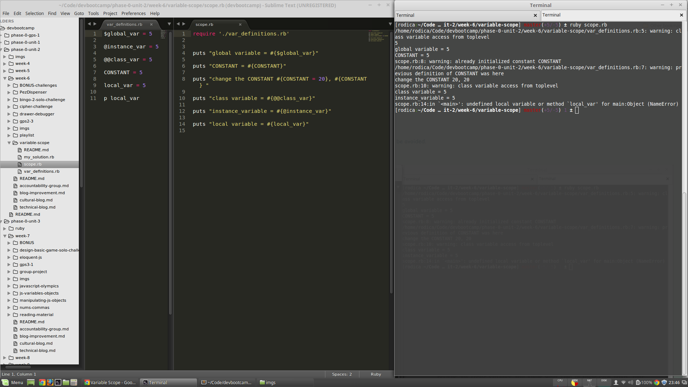

Variable Scope
Local, instance or global?
07/05/15
In Ruby we have the following types of variables:
- global: $global_var = 5. Visible accross all code in the program.
- instance: @instance_var = 5. Visible in the instance of the object.
- class: @@class_var = 5. Visible to all instances of the object.
- constant: CONSTANT = 5. Visible accross all code in the program. Will send warnings if we attempt to change their value.
- local: local_var = 5 Visible only in the local block or method.
The most used are the instance and the local variables. The use of global variables can have major implications and is recommended to be avoided.
Below is a sample of code running all types of variables.

The local_var is not carried over from the var_definitions.rb file via 'require'.
I've addapted the Child class to have a "parent class" so we can take a closer look at the class variable concept:

The @@count variable is incremented every time either a Human or a Child instance are created. child.show_count is not a method defined in the Child class, but it then goes up the inheritance line and searches for the show_count in the Human class. It finds it and puts the value that @@count stores.
I hope this article was useful to peruse and feel free to email me / twitter with feedback.